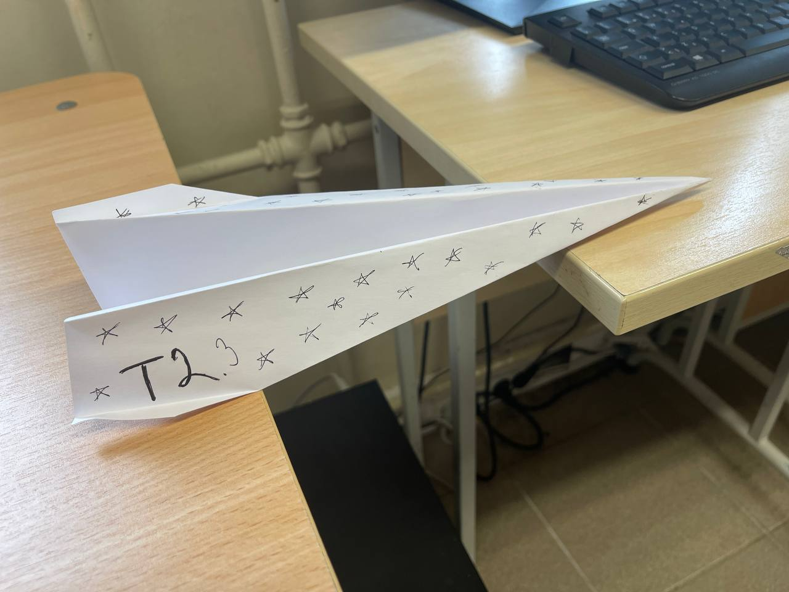
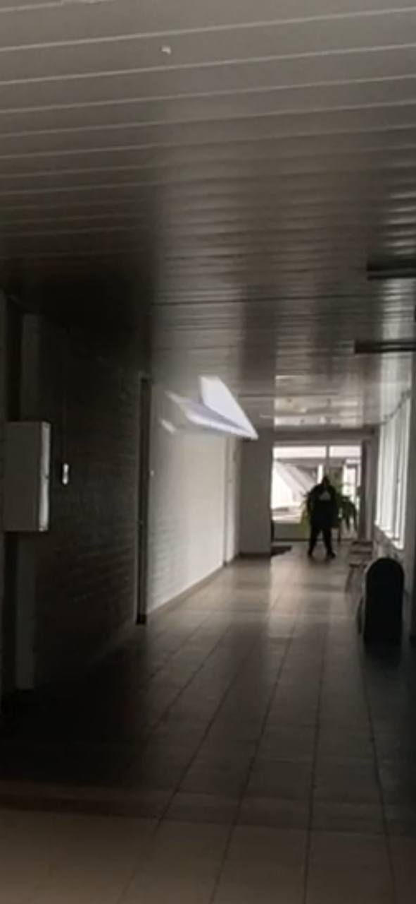

T2 • Testitud lennukitehases
Volteline lennuk, mis lendab stabiilselt ka päris maailmas.
T2 on meie tehase kõige edukam volteline lennuk: optimeeritud tiivaulatus, kontrollitud kaal ja stabiilne lennutrajektoor.
Max viskekaugus: 10 m
Stabiilne sirglend
Paber: 1 × A4

Tehniline kirjeldus
T2 tehnilised andmed
Andmed põhinevad meie rühma päriselt testitud lennukil.
| Tiivaulatus | 10 cm |
|---|---|
| Kogupikkus | 31 cm |
| Paber | A4, 80 g/m² |
| Kaal | ~4,7 g |
| Max viskekaugus | 10 m |
| Keskmine viskekaugus | 9 m |
| Lennu iseloom | Stabiilne sirglend |

Lennu video:Meie tehas
Kuidas T2 liikus konveierist agiilsuseni
T2 Tehas katsetas nii konveiermeetodit kui ka agiilset tootearendust.
Meeskond
T2 – rühm
Oleksandra Ryshniak
Tootearendaja / voltimismeister
Mariia Posvystak
Testija / mõõtja